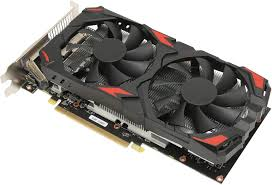

● CPU: la central processing unit, o simplemente «procesador». Es el más importante de todos los componentes. Determina qué tan rápido puede realizar procesos de cálculo el computador.
Existen varios tipos y de muchas generaciones: i3, i5, i7, ryzen 7. Estos son modelos de procesador y cada uno tiene generaciones; a mayor generación, mejor desempeño.

● Tarjeta gráfica: como su nombre lo indica, es la que procesa los gráficos, que en los últimos tiempos se han vuelto cada vez más realistas y de alta definición. Muchos procesadores tienen ya integrada una unidad de procesamiento de gráficos; sin embargo, para tareas más especializadas (como diseño gráfico o edición de películas), se necesitará probablemente una tarjeta gráfica externa.

● Placa madre o mainboard: es la que orquesta el trabajo coordinado entre todos los elementos internos del computador. Las tarjetas madre llevan una batería; cuando esta se gasta tenemos que cambiarla y revisar el sistema de la BIOS. La BIOS es el sistema operativo que guarda la tarjeta madre y que sirve para arrancar el sistema operativo del computador.
● Disco duro: mantiene la información más relevante e imprescindible para el funcionamiento del computador. Una alternativa es el disco de estado sólido, que es mucho más rápido, pero también más costoso.

● Memoria RAM. Se encarga de ayudar a los procesadores a mantener datos que no van a ser guardados en la computadora, se insertan en ranuras directamente conectadas a la tarjeta madre.

● Fuente de poder. Provee la energía eléctrica que consumirán los otros componentes.Los componentes internos suelen ir ensamblados en una «caja» (o case) que provee, además, ventilación al sistema, para evitar que se recaliente. En el case están los puertos que permiten conectar los periféricos… ¡Y así tenemos un aparato elegante y funcional!